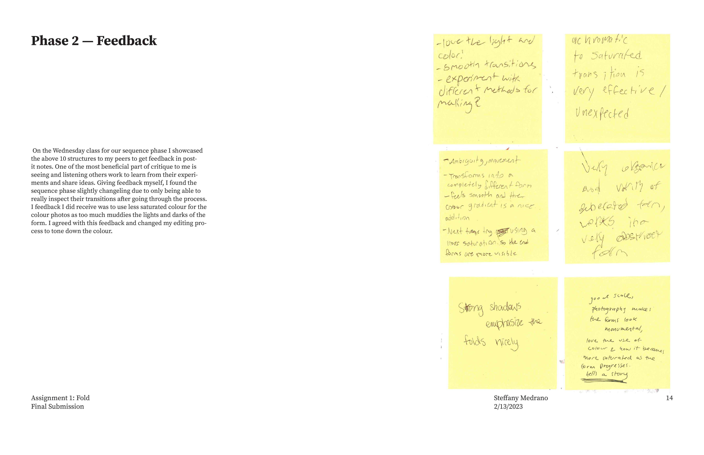
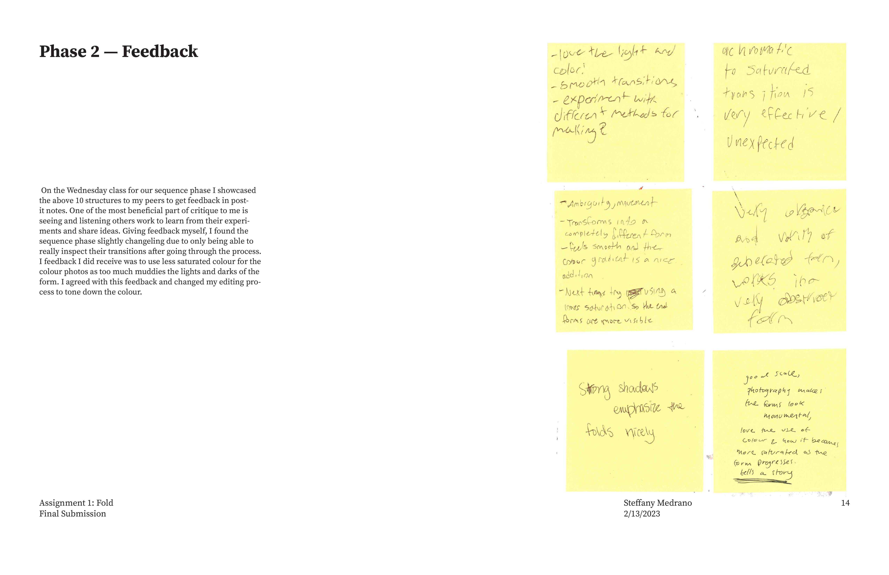
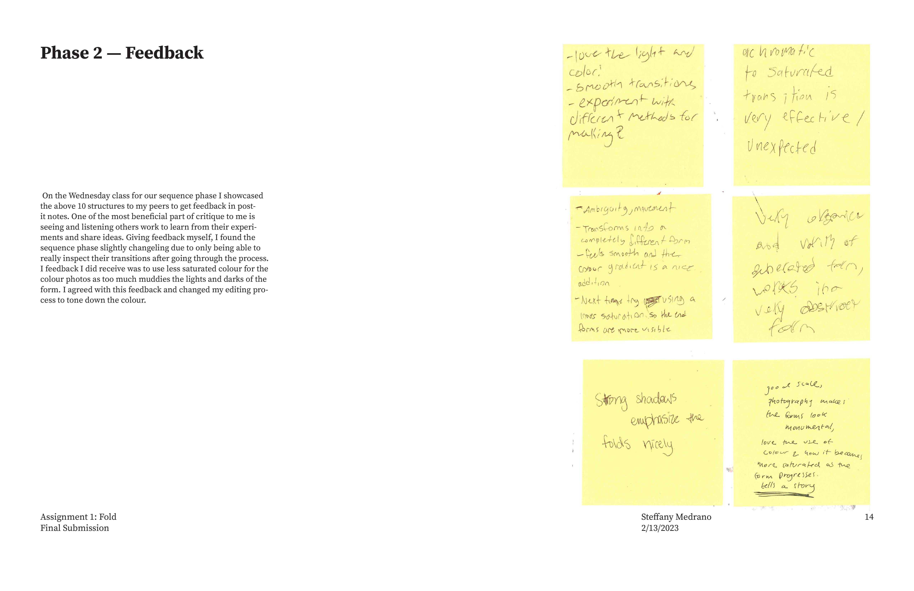

In this project, I explored the transformation of flat paper into complex three-dimensional forms through folding, scoring, cutting, and twisting. I began by creating a categorized form library that captured a wide range of formal principles—such as static vs. dynamic or structure vs. decoration. From this collection, I developed a 10-step sequence showing the gradual transformation of a single form, focusing on smooth, directional transitions. Building on this, I constructed superstructures by multiplying and systematically connecting individual modules, experimenting with arrangement, rotation, and reflection. In the final stage, I introduced a secondary material to explore new relationships in form, structure, and materiality. This project deepened my understanding of spatial design, systems thinking, and sustainable making processes.
